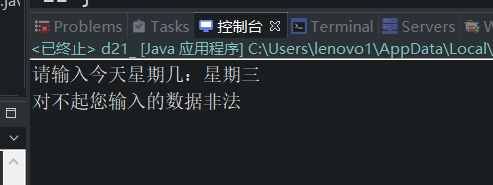
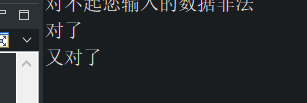
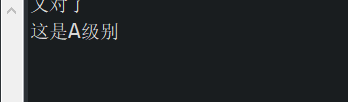

原文出处:本文由博客园博主心悦君兮君不知-睿提供。
原文连接:https://www.cnblogs.com/ruigege0000/p/11415868.html
原文连接:https://www.cnblogs.com/ruigege0000/p/11415868.html
一、switch练习
public class d21_{
public static void main(String[] args) {
java.util.Scanner s = new java.util.Scanner(System.in);
System.out.print("请输入今天星期几：");
String dayOfWeek = s.next();
switch(dayOfWeek) {
case "星期一" :
System.out.println(1);
break;
case "星期二" :
System.out.println(2);
break;
default :
System.out.println("对不起您输入的数据非法");
}
}
}
注意：switch(int/String)
我们举例，这里传入的是char类型，而实际上却是'B'，就是66
char a = 'B';
switch (a) {
case 'B' :
System.out.println("对了");
break;
default :
System.out.println("错了");
}
switch (a){
case 66 :
System.out.println("又对了");
break;
default :
System.out.println("又错了");
}

二、我们判断一个学生成绩的等级
//需求：
double a1 = 95.5;
int b1 = (int)(a1/10);
switch(b1) {
case 10 : case 9 :
System.out.println("这是A级别");
break;
case 8 : case 7 : case 6 :
System.out.println("这是B级别");
default :
System.out.println("这是C级别");
}
}
}
三、源码：
d21_switch_exercise.java
地址：https://github.com/ruigege66/Java/blob/master/d21_switch_exercise.java
2.CSDN：https://blog.csdn.net/weixin_44630050（心悦君兮君不知-睿）
3.博客园：https://www.cnblogs.com/ruigege0000/
4.欢迎关注微信公众号：傅里叶变换，后台回复”礼包“，获取大数据学习资料